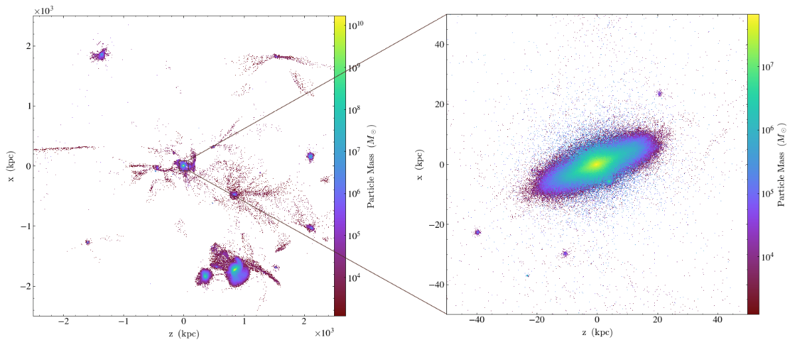

I am Begoña, a passionate Data Scientist. I currently develop solutions via AI and Machine Learning techniques, fully integrated in Python back-ends.
Throughout my profesional experience I have been able to learn complex problem solving, as well as developing my passion for science and technology.
My scientific work
Galactoseismology in cosmological simulations. Vertical perturbations by dark matter, satellite galaxies, and gas (2024)
in Astronomy & Astrophysics
Phase spirals in cosmological simulations of Milky Way-sized galaxies (2022)
in Monthly Notices of the Royal Astronomical Society

This model of similar size of the Milky Way allows us to study disk dynamics, gas, and dark matter structure.
The phase spiral in Gaia DR3 (2023)
in Astronomy & Astrophysics
We explore the vertical phase space of the stars in the Solar Neighborhood.
Education
Ph.D. in Astrophysics, Universidad Complutense de Madrid (2024)
M.Sc. in Astrophysics, Universidad Complutense de Madrid (2019)
Final project: Study of the connection Galaxy-Halo in a Milky Way like system: Evolution of Spin parameter in GARROTXA simulation.
B.Sc in Physics, Universidad Complutense de Madrid (2018)
Spetialization in astornomy and astrohpysics
Final project: Multivariate analysis of line-strength indices of the Spectrum of Spiral Galaxies' Bulges
Skills
Python, R, JavaScript.
Machine learning & AI microservices.
Advanced statistics: Bayesian statistics, MCMC, multivariate analysis, PCA, advanced visualization of data.
Scientific communication.
{kind=link}